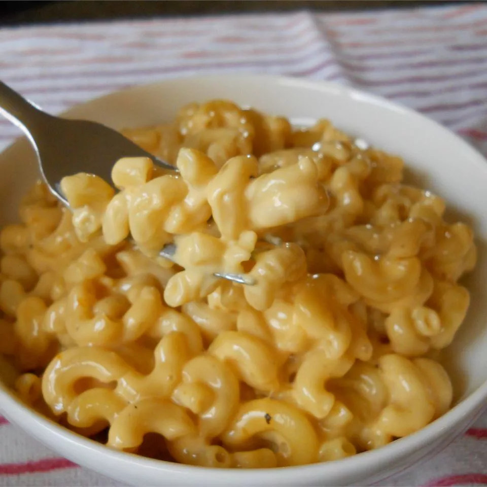

Mac and Cheese Recipe

Description
This recipe is the best in the world. I found in hidden in the basement in Italy
Ingredients
- 4 ounces elbow macaroni
- 4 ounces cubed processed cheese food
- 2 fluid ounces milk
- ¼ teaspoon ground black pepper
Directions
- Bring a large pot of lightly salted water to a boil. Add pasta and cook until al dente, 8 to 10 minutes; drain.
- Place a saucepan over medium-low heat. Combine the cheese food, milk, and pepper in the saucepan;
cook until the cheese has melted, stirring frequently. Stir in the drained macaroni until evenly coated.